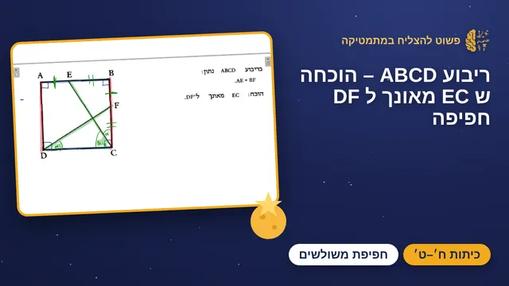
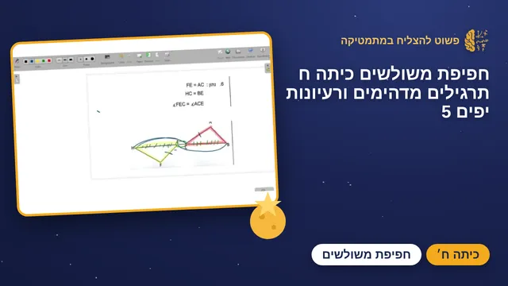
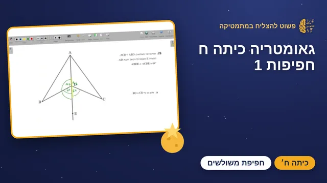
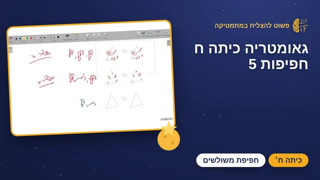

פשוט להצליח במתמטיקה › כל הנושאים › חפיפת משולשים
חפיפת משולשים – סרטוני הסבר ותרגול
12 סרטוני הסבר ותרגול בנושא חפיפת משולשים – לכיתה ח׳, כיתה ט׳. כל נושא מוסבר מהקל אל הקשה: קודם הרעיון, אחר כך תרגילים, ובסוף שאלות בסגנון בגרות. הכול בחינם, בשיטת "פשוט להצליח".
רוצים לעקוב אחרי ההתקדמות?נרשמים בחינם, וכל סרטון שראיתם מסומן ✓. ממשיכים מכל מכשיר.
הצטרפות בחינם ←חפיפת משולשים – כיתה ח׳ כל הנושאים של כיתה ח׳ ←
 טרנספורמציות וצורות חופפות – צ.ז.צ, ישרים מקבילים וסיבוב
טרנספורמציות וצורות חופפות – צ.ז.צ, ישרים מקבילים וסיבוב
ריבוע ABCD – הוכחה ש EC מאונך ל DF חפיפה חפיפת משולשים – הוכחה בשרטוט ״זיגזג״
חפיפת משולשים – הוכחה בשרטוט ״זיגזג״ חפיפת משולשים כיתה ח תרגילים מדהימים ורעיונות יפים 3
חפיפת משולשים כיתה ח תרגילים מדהימים ורעיונות יפים 3
חפיפת משולשים כיתה ח תרגילים מדהימים ורעיונות יפים 5חפיפת משולשים כיתה ח תרגילים מדהימים ורעיונות יפים 4 חפיפת משולשים כיתה ח תרגילים מדהימים ורעיונות יפים 2
חפיפת משולשים כיתה ח תרגילים מדהימים ורעיונות יפים 2 גאומטריה כיתה ח חפיפות 4
גאומטריה כיתה ח חפיפות 4 גאומטריה כיתה ח חפיפות 2
גאומטריה כיתה ח חפיפות 2 גאומטריה כיתה ח חפיפות 3
גאומטריה כיתה ח חפיפות 3
גאומטריה כיתה ח חפיפות 1
גאומטריה כיתה ח חפיפות 5